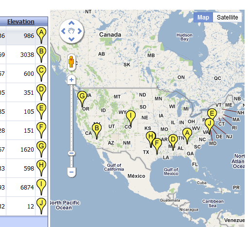
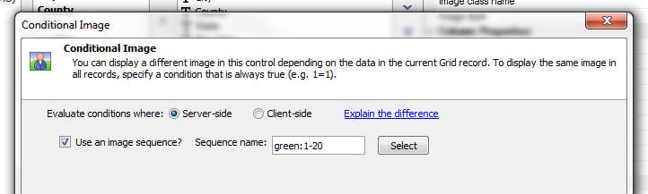
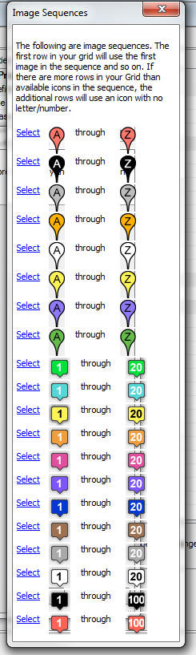

Grid Component - Dynamic Images - Image Sequences
When you put a dynamic image field in the Grid you can now use 'image sequences'. This is particularly useful when used in conjunction with the Google Map alternate view.For example, the screen shot below shows a Google Map that is using image sequences for the markers on the map and the dynamic image in the Grid uses the same image sequence.
Selecting an image sequence is easy. See the screenshots below.

The screen below shows a new option in the builder for the Image control on a Grid. To use an image sequence, you simply check the box.

To select an image sequence, click the Select button. The image below shows the built-in image sequences.
